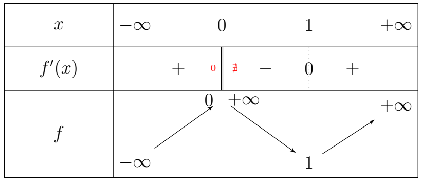
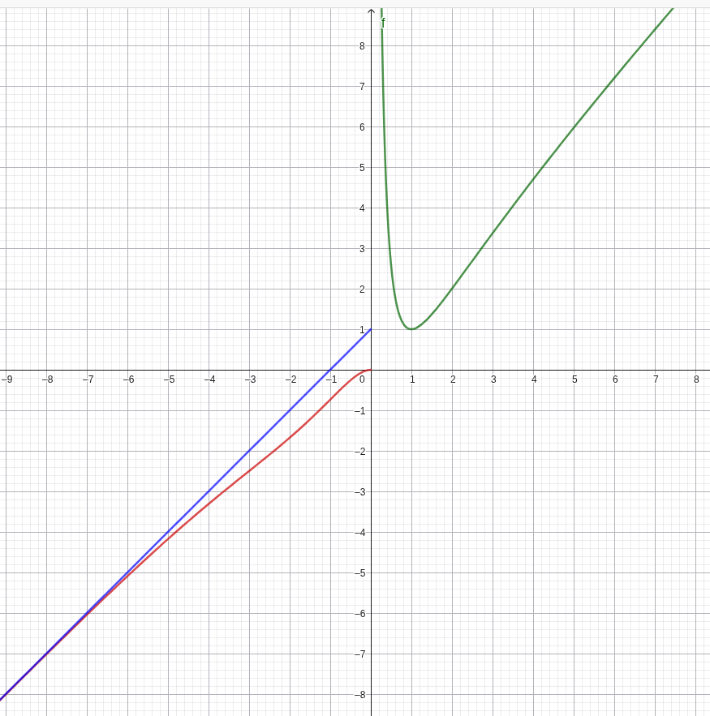

Donner $P_1$
L'énoncé précise que le premier Août 2020, il a plu. L'événement $A_1$ est donc certain. $ P_1 = 1 $
Calculer $P_2$
D'après la formule des probabilités totales en utilisant le système complet d'événements $\{A_1, \overline{A_1}\}$ :
$ P(A_2) = P(A_2 | A_1) \times P(A_1) + P(A_2 | \overline{A_1}) \times P(\overline{A_1}) $
D'après l'énoncé :
$P(A_2 | A_1) = 1/3$ (probabilité qu'il pleuve s'il a plu la veille)
$P(A_1) = 1$ et donc $P(\overline{A_1}) = 0$
$ P_2 = \frac{1}{3} \times 1 + P(A_2 | \overline{A_1}) \times 0 = \frac{1}{3} $
Montrer que $P_{n+1} = -\frac{4}{15} P_n + \frac{3}{5}$
Appliquons la formule des probabilités totales pour le jour $n+1$ :
$ P_{n+1} = P(A_{n+1} | A_n) P(A_n) + P(A_{n+1} | \overline{A_n}) P(\overline{A_n}) $
On sait que :
En remplaçant :
$ \begin{aligned} P_{n+1} &= \dfrac{1}{3} P_n + \dfrac{3}{5} (1 - P_n)\\ &=\dfrac{1}{3} P_n + \dfrac{3}{5} - \dfrac{3}{5} P_n\\ &=\left( \dfrac{5}{15} - \dfrac{9}{15} \right) P_n + \dfrac{3}{5}\\ &=-\dfrac{4}{15} P_n + \dfrac{3}{5} \end{aligned} $Étude de la suite $(u_n)$
Soit $u_n = P_n - \frac{9}{19}$.s
Montrer que $(u_n)$ est une suite géométrique :
$ \begin{aligned} u_{n+1} &= P_{n+1} - \frac{9}{19}\\ &= \left( -\dfrac{4}{15} P_n + \dfrac{3}{5} \right) - \dfrac{9}{19} \end{aligned} $
En remplaçant $P_n$ par $u_n + \dfrac{9}{19}$ :
$ \begin{aligned} u_{n+1} &= -\dfrac{4}{15} \left( u_n + \dfrac{9}{19} \right) + \dfrac{3}{5} - \dfrac{9}{19}\\ &= -\frac{4}{15} u_n - \frac{36}{285} + \frac{171}{285} - \frac{135}{285}\\ &= -\frac{4}{15} u_n \end{aligned} $
$(u_n)$ est une suite géométrique de raison $q = -\dfrac{4}{15}$
et de premier terme
$ \begin{aligned} u_1 &= P_1 - \frac{9}{19}\\ &= 1 - \dfrac{9}{19}\\ &=\dfrac{10}{19} \end{aligned} $.
Exprimer $P_n$ en fonction de $n$ :
On a $u_n = u_1 \times q^{n-1}$
soit : $ u_n = \frac{10}{19} \left( -\frac{4}{15} \right)^{n-1} $
D'où : $ P_n = \frac{10}{19} \left( -\frac{4}{15} \right)^{n-1} + \frac{9}{19} $
Probabilité qu'il pleuve le 5 Août
On calcule $P_5$ en posant $n=5$ :
$ \begin{aligned} P_5 &= \frac{10}{19} \left( -\frac{4}{15} \right)^4 + \frac{9}{19}\\ &= \frac{10}{19} \times \frac{256}{50625} + \frac{9}{19}\\ &\approx 0,4763 \end{aligned} $
La probabilité qu'il pleuve le 5 août est d'environ $\textbf{0,476}$
Calcul de $u_1$ et $u_2$
Pour $n = 0$ :
$ \begin{aligned} u_1 &= \dfrac{1}{u_0} + \dfrac{3}{4}u_0\\ &= \dfrac{1}{6} + \dfrac{3}{4} \times 6\\ &=\dfrac{1}{6} + \dfrac{18}{4}\\ &= \dfrac{1}{6} + \dfrac{9}{2}\\ &= \dfrac{1 + 27}{6}\\ &=\dfrac{28}{6}\\ &= \dfrac{14}{3} \end{aligned} $
Pour $n = 1$ :
$ \begin{aligned} u_2 &= \dfrac{1}{u_1} + \dfrac{3}{4}u_1\\ &= \dfrac{3}{14} + \dfrac{3}{4} \times \dfrac{14}{3}\\ &=\dfrac{3}{14} + \dfrac{14}{4}\\ &= \dfrac{3}{14} + \dfrac{7}{2}\\ &= \dfrac{3 + 49}{14}\\ &=\dfrac{52}{14}\\ &= \dfrac{26}{7} \end{aligned} $
$\textbf{Conclusion :}$ $u_1 = \dfrac{14}{3}$ et $u_2 = \dfrac{26}{7}$.
Démontrons par récurrence que : $\forall n \in \mathbb{N}, \quad u_n \ge \sqrt{3}$ (3 × 0,5 pt)
Soit $\mathcal{P}(n)$ la propriété : « $u_n \ge \sqrt{3}$ ».
Initialisation :>
Pour $n = 0$, $u_0 = 6$. Or $6 \ge \sqrt{3}$ (car $36 \ge 3$). Donc $\mathcal{P}(0)$ est vraie.
Hérédité :
Supposons que pour un entier $n \ge 0$ fixé, $\mathcal{P}(n)$ soit vraie, c'est-à-dire que $u_n \ge \sqrt{3}$.
Montrons que $\mathcal{P}(n+1)$ est vraie,
soit $u_{n+1} \ge \sqrt{3}$.
Considérons la différence $u_{n+1} - \sqrt{3}$ :
$ \begin{aligned} u_{n+1} - \sqrt{3} &= \frac{1}{u_n} + \frac{3}{4}u_n - \sqrt{3}\\ &= \frac{4 + 3u_n^2 - 4\sqrt{3}u_n}{4u_n} \end{aligned} $
On reconnaît une identité remarquable au numérateur :
$3u_n^2 - 4\sqrt{3}u_n + 4 = (\sqrt{3}u_n - 2)^2$
D'où :
$u_{n+1} - \sqrt{3} = \frac{(\sqrt{3}u_n - 2)^2}{4u_n}$
Par hypothèse de récurrence, $u_n \ge \sqrt{3} > 0$, donc le dénominateur $4u_n$ est strictement positif. Le numérateur étant un carré parfait, il est positif ou nul.
On en déduit que :
$u_{n+1} - \sqrt{3} \ge 0 \implies u_{n+1} \ge \sqrt{3}$
La propriété est donc héréditaire.
Conclusion :
Par le principe de récurrence, $\forall n \in \mathbb{N}, \quad u_n \ge \sqrt{3}$.
Convergence et limite de la suite $(u_n)$
Sens de variations de $f$
La fonction $f$ est dérivable sur $]0, +\infty[$ comme somme de fonctions dérivables.
$f'(x) = -\dfrac{1}{x^2} + \dfrac{3}{4} = \dfrac{3x^2 - 4}{4x^2}$
Le dénominateur $4x^2$ étant strictement positif sur $]0, +\infty[$, $f'(x)$ est du signe de $3x^2 - 4$.
$3x^2 - 4 = 0 \iff x^2 = \dfrac{4}{3} \iff x = \dfrac{2}{\sqrt{3}} = \dfrac{2\sqrt{3}}{3} \quad (\text{car } x > 0)$
Pour $x \in \left]0, \dfrac{2\sqrt{3}}{3}\right[$, $3x^2 - 4 < 0 \implies f'(x) < 0$, donc $f$ est strictement décroissante.
Pour $x \in \left]\dfrac{2\sqrt{3}}{3}, +\infty\right[$, $3x^2 - 4 > 0 \implies f'(x) > 0$, donc $f$ est strictement croissante.
Remarque utile pour la suite : Puisque $\sqrt{3} = \dfrac{3}{\sqrt{3}} > \dfrac{2}{\sqrt{3}}$, l'intervalle $[\sqrt{3}, +\infty[$ est inclus dans l'intervalle où $f$ est strictement croissante. Donc $f$ est strictement croissante sur $[\sqrt{3}, +\infty[$.
Déduisons-en par récurrence que $(u_n)$ est strictement décroissante
Soit $\mathcal{Q}(n)$ la propriété : « $u_{n+1} < u_n$ ».
Initialisation :
Pour $n = 0$, $u_1 = \frac{14}{3} \approx 4,67$ et $u_0 = 6$. On a bien $u_1 < u_0$.
Donc $\mathcal{Q}(0)$ est vraie.
Hérédité :
Supposons que $\mathcal{Q}(n)$ soit vraie pour un entier $n \ge 0$, c'est-à-dire $u_{n+1} < u_n$.
D'après la question 2, nous savons que $u_{n+1} \ge \sqrt{3}$ et $u_n \ge \sqrt{3}$.
Comme la fonction $f$ est strictement croissante sur $[\sqrt{3}, +\infty[$, elle conserve l'ordre de l'inégalité :
\[ u_{n+1} < u_n \implies f(u_{n+1}) < f(u_n) \]
Par définition de la suite, $f(u_{n+1}) = u_{n+2}$ et $f(u_n) = u_{n+1}$. On obtient donc :
\[ u_{n+2} < u_{n+1} \]
La propriété est donc héréditaire.
Conclusion :
Par le principe de récurrence, la suite $(u_n)_{n \in \mathbb{N}}$ est strictement décroissante.
Convergence et limite de la suite $(u_n)$
Convergence :
La suite $(u_n)$ est décroissante (question 3.b) et minorée par $\sqrt{3}$ (question 2).
D'après le théorème de la convergence monotone, la suite $(u_n)$ est convergente.Soit $\ell$ sa limite.
Détermination de la limite $\ell$ :
Puisque $\forall n \in \mathbb{N}, u_n \ge \sqrt{3}$, par passage à la limite on a $\ell \ge \sqrt{3}$.
La fonction $f$ étant continue sur $]0, +\infty[$, la limite $\ell$ est solution de l'équation $f(\ell) = \ell$ :
\[ \ell = \frac{1}{\ell} + \frac{3}{4}\ell \iff \ell - \frac{3}{4}\ell = \frac{1}{\ell} \iff \frac{1}{4}\ell = \frac{1}{\ell} \iff \ell^2 = 4 \]
Cette équation admet deux solutions réelles : $\ell = 2$ ou $\ell = -2$.
Comme $\ell \ge \sqrt{3}$ (et $\sqrt{3} \approx 1,732$), la seule valeur possible est $\ell = 2$.
Conclusion :
La suite $(u_n)_{n \in \mathbb{N}}$ converge vers $\ell = 2$.
Soit les fonctions $g$ et $h$ définies respectivement par :
$g(x) = x^2 + x - 2 + 2\ln(x)$ sur $]0; +\infty[$
et $h(x) = 1 - (x+1)^2e^x$ sur $]-\infty; 0]$.
Variations de $g$ et $h$
Pour la fonction $g$ sur $]0; +\infty[$ :
$g$ est dérivable sur $]0; +\infty[$ comme somme de fonctions dérivables.
\[ \forall x \in ]0; +\infty[, \quad g'(x) = 2x + 1 + \dfrac{2}{x} \]
Pour tout $x > 0$, $2x > 0$, $1 > 0$ et $\frac{2}{x} > 0$.
Donc $g'(x) > 0$.
La fonction $g$ est donc strictement croissante sur $]0; +\infty[$.
Pour la fonction $h$ sur $]-\infty; 0]$ :
$h$ est dérivable sur $]-\infty; 0[$.
En posant $u(x) = (x+1)^2$, on a $u'(x) = 2(x+1)$.
\[ h'(x) = 0 - \left[ 2(x+1)e^x + (x+1)^2e^x \right] = -(x+1)e^x \left[ 2 + (x+1) \right] = -(x+1)(x+3)e^x \]
Le signe de $h'(x)$ dépend du trinôme $-(x+1)(x+3)$ car $e^x > 0$. Les racines sont $-3$ et $-1$.
Sur $]-\infty; -3[$ et $]-1; 0]$, $h'(x) < 0$, donc $h$ est strictement décroissante.
Sur $]-3; -1[$, $h'(x) > 0$, donc $h$ est strictement croissante.
Calcul de $g(1)$ et signe de $g$
$g(1) = 1^2 + 1 - 2 + 2\ln(1) = 0$.
Puisque $g$ est strictement croissante sur $]0; +\infty[$ et s'annule en $1$ :
$\forall x \in ]0; 1[, \quad g(x) < 0$
$\forall x \in [1; +\infty[, \quad g(x) \ge 0$
Signe de $h$ sur $]-\infty; 0]$
Calculons les valeurs remarquables de $h$ :
$h(-3) = 1 - 4e^{-3} \approx 0,8$ et $h(-1) = 1 - 0 = 1$.
De plus, $h(0) = 1 - 1e^0 = 0$.
Les limites aux bornes donnent : $\lim\limits_{x \to -\infty} h(x) = 1$ (car $\lim\limits_{x \to -\infty} (x+1)^2e^x = 0$ par croissances comparées).
Le maximum absolu de $h$ est $1$ en $-1$ et son minimum sur $[1; 0]$ est $h(0) = 0$.
Par conséquent, $\forall x \in ]-\infty; 0]$, $h(x) \ge 0$, la fonction ne s'annulant qu'en $0$.
Soit $f$ la fonction définie par :
$f(x) = \begin{cases} x + \left(1 - \dfrac{2}{x}\right) \ln(x) & \text{si } x > 0 \\ x + 1 - (x^2 + 1)e^x & \text{si } x \le 0 \end{cases}$
Domaine de définition. ( 0,25 pt)
$\text{Posons }f(x) = \begin{cases} f_1(x) & \text{si } x > 0 \\ f_2(x) &\text{si } x \le 0 \end{cases}$
$f_1(x)$
$ \begin{aligned} f_1 \quad \exists &\iff x>0 \text{ et } x>0 \\ &\iff x\in ]0; +\infty[ \end{aligned} $
$Df_1=]0; +\infty[$
$f_2(x)$
$ \begin{aligned} f_2 \quad \exists &\iff x\in\mathbb{R} \text{ et } x\leq 0 \\ &\iff x\in (\mathbb{R}\cap]-\infty; 0] ) \end{aligned} $
$Df_2=]-\infty; 0]$
Donc:
$ \begin{aligned} Df&=Df_1 \cup Df_2\\ &=]-\infty; 0]\cup]0; +\infty[\\ &=\mathbb{R} \end{aligned} $
Calculons les limites aux bornes de $D_f$. ( 0,5 pt)
En $-\infty$:
$ \begin{aligned} \lim\limits_{x \to -\infty} f(x) &= \lim\limits_{x \to -\infty} \left[ x + 1 - (x^2+1)e^x \right]\\ &= \lim\limits_{x \to -\infty} x + 1 - x^2e^x+e^x: \begin{cases} \displaystyle \lim\limits_{x \to -\infty} x^2e^x = 0\\[3mm] &\textbf{Par croissances comparées}\\[3mm] \displaystyle \lim\limits_{x \to -\infty} e^x = 0 \end{cases} \end{aligned} $$ \textbf{Donc }\lim\limits_{x \to -\infty} f(x) = -\infty$.
En $+\infty$:
$ \begin{aligned} \lim\limits_{x \to +\infty} f(x) &= \lim\limits_{x \to +\infty} \left[ x + \left(1 - \dfrac{2}{x}\right)\ln(x) \right]\\ &= \begin{cases} \displaystyle \lim\limits_{x \to +\infty} \left(1-\frac{2}{x}\right)=1 \\[3mm] &\textbf{donc par somme et produit} \\[3mm] \displaystyle \lim\limits_{x \to +\infty}\ln(x)=+\infty \end{cases}\\[3mm] &= +\infty \end{aligned} $$ \textbf{Donc }\lim\limits_{x \to +\infty} f(x) = +\infty$.
Branches infinies
En $-\infty$ : $ \lim\limits_{x \to -\infty} f(x) = -\infty$.
On remarque que
$\begin{aligned} \lim\limits_{x \to -\infty} [f(x) - (x+1)] &= \lim\limits_{x \to -\infty} -(x^2+1)e^x\\ &= 0 \end{aligned}$
La droite $(\Delta) : y = x + 1$ est donc une asymptote oblique à $(\mathcal{C}_f)$ en $-\infty$.
En $-\infty$ : $ \lim\limits_{x \to +\infty} f(x) = +\infty$.
$\begin{aligned} \lim\limits_{x \to +\infty} \dfrac{f(x)}{x} &= \lim\limits_{x \to +\infty} \left[ 1 + \left(\dfrac{1}{x} - \dfrac{2}{x^2}\right)\ln(x) \right]\\ &= \lim\limits_{x \to +\infty} \left[ 1 + \dfrac{\ln(x)}{x} - 2\dfrac{\ln(x)}{x^2} \right]\\ &= 1\end{aligned}$
Calculons maintenant $ \lim\limits_{x \to +\infty} [f(x) - x] $
$\begin{aligned} \lim\limits_{x \to +\infty} [f(x) - x] &= \lim\limits_{x \to +\infty} \left(1 - \frac{2}{x}\right)\ln(x)\\ &= +\infty\end{aligned}$
$(\mathcal{C}_f)$ admet une branche parabolique de direction la droite $y = x$ en $+\infty$.
Position de $(\mathcal{C}_f)$ par rapport à $(\Delta)$
On étudie le signe de $f(x) - (x+1) = -(x^2+1)e^x$.
Pour tout $x \in ]-\infty; 0]$, $x^2+1 > 0$ et $e^x > 0$
donc $f(x) - (x+1) \le 0$.
La courbe $(\mathcal{C}_f)$ est en dessous de l'asymptote $(\Delta)$.
Continuité en $0$
En $0^-$
$ \begin{aligned} \displaystyle \lim\limits_{x \to 0^-} f(x) &=\lim\limits_{x \to 0^-} x + 1 - (x^2 + 1)e^x\\ &= 1 - 1\\ &= 0 \end{aligned} $
En $0^+$
$ \begin{aligned} \displaystyle \lim\limits_{x \to 0^+} f(x) &=\lim\limits_{x \to 0^+} x + \left(1 - \dfrac{2}{x}\right) \ln(x)\\ \displaystyle &=\lim\limits_{x \to 0^+} \left[ x + \ln(x) - \dfrac{2\ln(x)}{x} \right]\\ \displaystyle &=0-\infty-2\times 0\\ &= -\infty \end{aligned} $
En $0$
$f(0) = 0 + 1 - (0+1)e^0 = 0$.
La fonction $f$ n'est pas continue en $0$.
Dérivabilité en $0$
En $0^-$
$ \begin{aligned} \lim\limits_{x \to 0^-} \dfrac{f(x) - f(0)}{x-0} &= \lim\limits_{x \to 0^-} \dfrac{x + 1 - (x^2+1)e^x}{x}\\ &=\lim\limits_{x \to 0^-} \left[ 1 + \dfrac{1 - e^x}{x} - xe^x \right]\\ &=\lim\limits_{x \to 0^-} \left[ 1 - \dfrac{e^x-1}{x} - xe^x \right]: \begin{cases} \lim\limits_{x \to 0^-} \dfrac{e^x-1}{x} = 1\\[3mm] &\textbf{Par Somme}\\ \lim\limits_{x \to 0^-} xe^x = 0 \end{cases}\\ &=1-1-0\\ &=0 \end{aligned} $Donc $f$ est dérivable à gauche de $0$ et $f'_g(0) = 0$.
$(\mathcal{C}_f)$ admet une demi-tangente horizontale à gauche au point $(0,0)$
En $0^+$
Comme $f$ n'est pas continue à droite de $0$, elle n'y est pas dérivable.
Dérivée sur $]0; +\infty[$
Pour $x > 0$ :
$ \begin{aligned} f'(x) &= 1 + \left(\frac{2}{x^2}\right)\ln(x) + \left(1 - \frac{2}{x}\right)\frac{1}{x}\\[3mm] & 1 + \frac{2\ln(x)}{x^2} + \frac{1}{x} - \frac{2}{x^2}\\[3mm] &= \frac{x^2 + 2\ln(x) + x - 2}{x^2}\\[3mm] &= \frac{g(x)}{x^2} \end{aligned} $Le dénominateur $x^2$ étant strictement positif, $f'(x)$ a le même signe que $g(x)$ (étudié en Partie A.2) :
Sur $]0; 1[, \quad f'(x) < 0$ (fonction strictement décroissante).
Sur $[1; +\infty[, \quad f'(x) \ge 0$ (fonction strictement croissante).
Dérivée sur $]-\infty; 0[$
Pour $x < 0$ :
$ \begin{aligned} f'(x) &= 1 + 0 - \left[ 2xe^x + (x^2+1)e^x \right]\\[3mm] &= 1 - (x^2 + 2x + 1)e^x\\[3mm] &= 1 - (x+1)^2e^x\\[3mm] &= h(x) \end{aligned} $D'après la question A.3, $h(x) \ge 0$ sur $]-\infty; 0]$. Donc $f'(x) \ge 0$ sur $]-\infty; 0[$.
La fonction $f$ est strictement croissante sur cet intervalle.
Tableau de variations et courbe
Sur $]-\infty; 0]$, $f$ croît de $-\infty$ à $0$.
En $0^+$, la courbe part de $+\infty$.
Sur $]0; 1]$, $f$ décroît de $+\infty$ jusqu'à $f(1) = 1$.
Sur $[1; +\infty[$, $f$ croît de $1$ à $+\infty$.

La coube
📈 Courbe de la fonction f
Courbe représentative de \(f\) avec les asymptotes \(\Delta_1: y = x + 1\)
👉 Clique ici pour voir la courbe sur Geogebra

Bijection de la restriction $k$